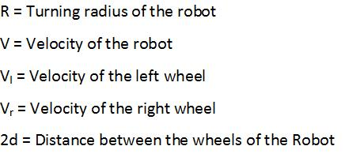

Why there is a need for motion planning in robotics?
Motion planning is essential in robotics because a mere geometrically feasible path may not satisfy all the constraints imposed by the system. In motion planning we try to find feasible trajectories that satisfy constraints which maybe either local or global.
Take the below example
Fig-1 Fig-2
The first figure gives us a geometrically feasible path but the kinematics of the vehicle will not allow for the vehicle to move in that path. In contrast the second figure gives a path satisfying constraints imposed by the system.
What are the different types of planners?
There are broadly three types of constraints:
- Geometric
- Kinematic
- Dynamic
Geometric: Gives only the collision-free path and does not check the kinematic-feasibility of the path.
Kinematic: This gives both a collision-free and kinematically consistant path that is derived from the forward-kinematics of the robot.
Forward Kinematics determines where a point on the robot would be after a time interval t given the velocity of the independent actuators on the robot
Different types of robots using different steering and suspensions
- Differential drive : In this type of vehicle we have two active wheels.The difference between the velocities of the wheels determines the turning angle. This is the most commonly used kinematic model. Its examples are ER1, pioneer.
- Synchro drive : In this type of vehicle all the wheels are driven at same speed. All the wheels rotate simultaneously and are always parallel to each other. Nomad 200 is an example of this type of robot.
- Tricycle drive : In this type of vehicle only the front wheel is powered and is steerable. The rear two wheels tag along the front wheel. Example of
this type of robot is mecos tricycle-drive robot.
- Omnidirectional drive : This type of vehicle can move in all the directions from the starting point. These robots have special wheels which enable them to achieve this. Uranus omni-directional drive robot is an example of this type.

Differential drive

Synchro drive
Tricyle drive
Omnidirectional Drive
In this experiment we will see the kinematic motion planning using a technique called Rapidly exploring random tree(RRT).
What is RRT?
A Rapidly expanding random tree is a data structure and algorithm which is designed to search efficiently in a given state space. The tree is constructed in such a way that new nodes are added to the existing nodes by connecting them to the nearest node in the tree.

RRT Example

Kinematics of different robots
The forward kinematics problem is to find the velocities and the position of the robot given the velocities and the current position of the wheels at a future time instant.
We have to follow given any robot to determine the forward kinematics of it.
- Specify system measurements.
- Determine the point around which the robot is turning.
- Determine the speed at which the robot is turning to obtain the robot velocity.
- Integrate to find position.
Kinematics of differential drive robot
--- Specify system measurements. We have to fix all the co-ordinate systems required. We have to know the distance between wheel and the turning angle (the angle between the line joining the robot centre and the ICC and the X-axis on the robot's local frame, shown as theta in the figure).
-
Determine the point around which the robot is turning.
Find out the instantaneous centre of curvature(ICC) which lies on the intersection of the wheels axles. Each wheel must be travelling around the ICC with the same angular velocity.
-
Determine the speed at which the robot is turning to obtain the robot velocity.
It is easy to relate the velocites of the wheel to the velocities of the robot through few elementary equations.
- Integrate to find position
Integrate the respective components on the axes with respect to time to get the positions and the angular velocity to get the turning angle.
The equations of motion are:
Here


BasicRRT algorithm
Let the robot motion be governed by the control law
Xk+1=f(Xk,Uk)
Here X are the state variables and U are the inputs. In our case state variables are the position and the turning angle and the inputs are the wheel velocities. The differential equations for the kinematics can be aproximated to the discrete control law mentioned above.
So we can say that in the above case
Uk={Vl,Vr}
Xk={x,y,θ} and
Xk+1=f(Xk,Uk) is nothing but
(We integrate from tk to tk+1).
RRT starts by taking a random node and finding a node closest to that node in the given tree. It does this based on a certain metric which can be distance. Then it generates a successor node that will be added to the existing tree based on the control law. Then it checks whether the new node is free from any collision with the obstacles. If yes then the tree spreads further else it will terminate.
Pseudo-code for RRT
Simulation Example
Here we consider a differential drive robot which has a starting point and has to reach the goal point using the RRT algoritm. The starting and goal points are represented by blue boxes and the obstacles are represented by the black boxes. The green lines represent the evolution of the robot using different wheel velocities at each iteration and the red line represents the final path towards the goal.
1st Iteration 2nd Iteration
3rd Iteration 4th Iteration
As we can see the tree evolves towards the goal avoiding the obstacles.

The objective of the virtual lab is to do motion planning based on RRT. Here we use this method for getting geometrical feasible trajectories which satisfy the kinematics of the robot while avoiding any obstacles that maybe hindering in the evolution of the trajectories. We are using two types of vehicles mentioned above namely differential drive and omnidirectional vehicles to generate the paths.

- Select the initial location of the robot by clicking once in the tab.
- Select the goal position at the second click in the tab.
- Press "Run RRT" button to run the algorithm.
- Press "Run RRT" button to run the algorithm.
- Press "Show map" button to show the path that was constructed.
- Press “Move” button to move in the path generated according to the drive (differential/omni-directional drive) of the robot towards the goal.
- “Reset” button can be used always to reset the map being built.

Differential Drive Robot
Omni-directional Robot

- What does it mean to say that a geometrically feasible path is not kinematically feasible? Explain with an example.
- Which of the following robots is most suited for parallel parking
- Differential Drive
- Ackerman Steer
- Omni Drive
- For a differential drive robot with left and right wheel velocities, VL and VR, where VL does not equal VR, what is the trajectory traced by the center of the robot's wheelbase?
- How does evolving the tree towards a randomly selected configuration help the RRT?

Books
- Planning Algorithms - Stephen M.LaValle , Cambridge University Press
- Randomized Kinodynamic Motion Planning - Stephen M.LaValle, James Kuffner Jr., ICRA-99
Papers